If you haven't given up on me, you do not know me well enough.
If you have given up on me, you do not know me well enough.
We've come too far to give up who we are.
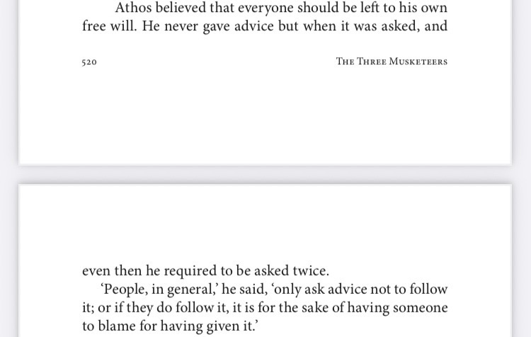
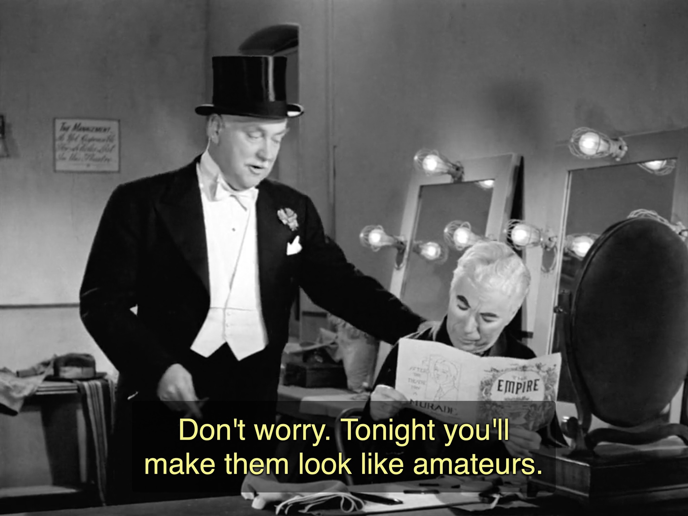
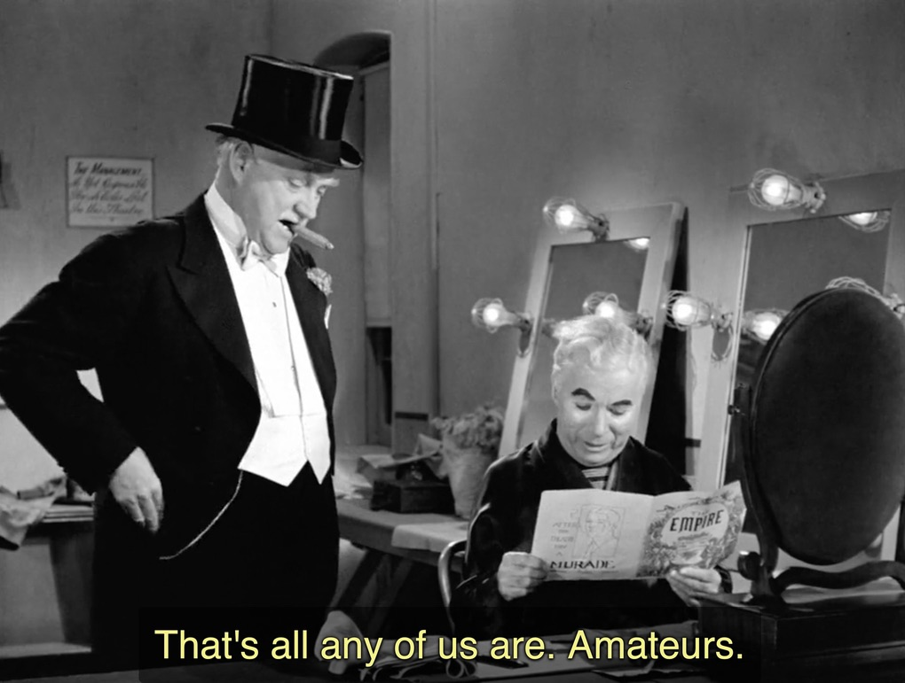
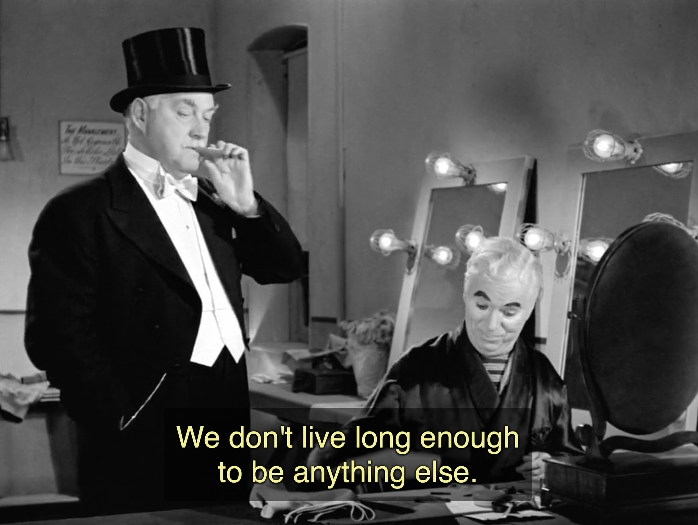
Limelight
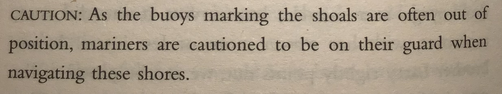
My Family and Other Animals
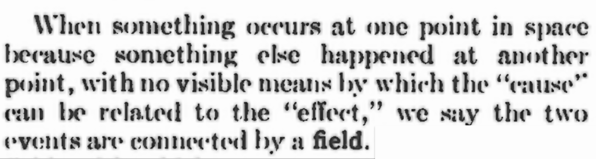
The 37th Edition of The Radio Amateur's Handbook, 1960
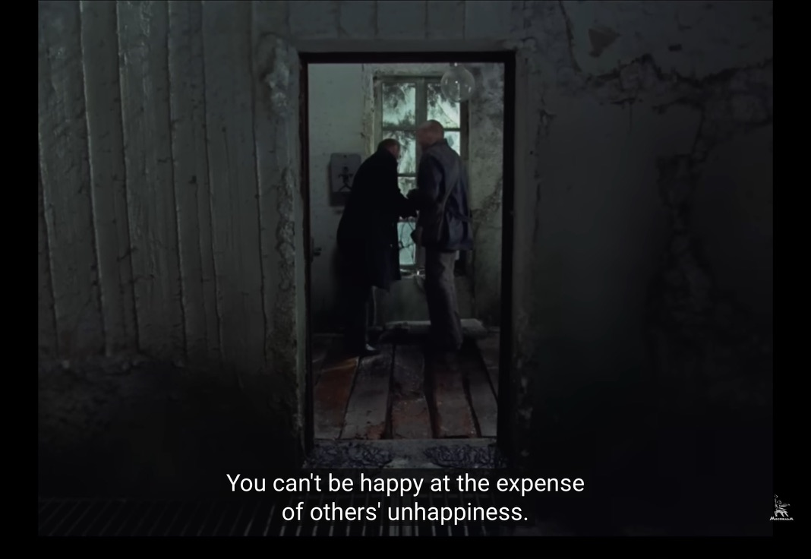
[Сталкер](русский/фильмы/сталкер/README.md)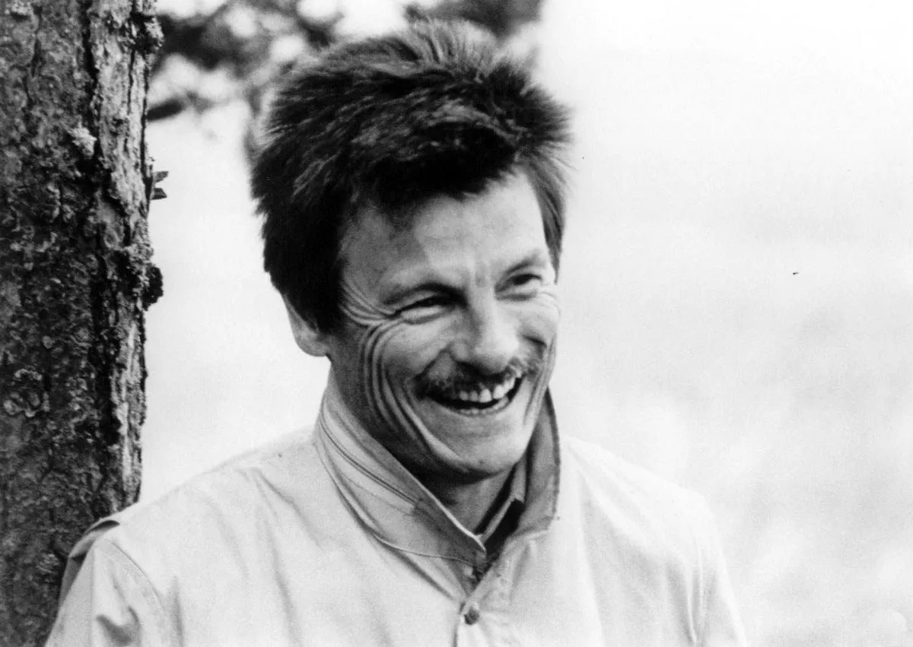
[Андре́й Тарко́вский](./русский/люди/андрей-тарковский/README.md) [Братья Стругацкие](русский/люди/братья-стругацкие/README.md)The Revolution Will Not Be Televised
[https://en.wikipedia.org/wiki/List_of_peace_activists](https://en.wikipedia.org/wiki/List_of_peace_activists) [Empathy](./english/original-research/empathy/README.md) [Gender](./english/original-research/gender/README.md) [Diplomacy](./english/original-research/diplomacy/README.md)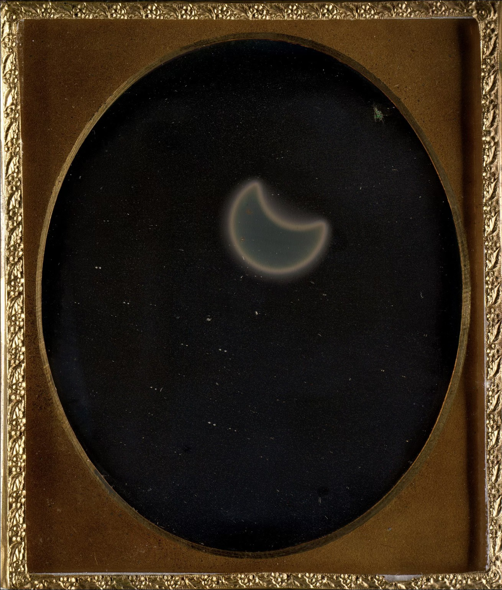
Frederick and William Langenheim: 'eclipse of the sun,' the first photograph of a solar eclipse (1854) [Photography](./english/original-research/photography/README.md) [Woke](./english/original-research/woke/README.md) [Book Publishing](./english/book-publishing/README.md) [Attention to Detail](./english/attention-to-detail/README.md) [A Relative Timeline](./english/original-research/a-relative-timeline) [Digital Products and Services](./english/original-research/digital-products-and-services/README.md) including "How to talk to the users?" by Sam AltmanReview of the Press
### Human Nature [Extrovert](Extrovert/README.md) [Motivation and Importance](Motivation/README.md) [Prohibition](Prohibition/README.md) [Criticism and Critique](criticism-and-critique/README.md) [Creativity](./Creativity/README.md) Paul McCartney and John Cleese [Friendship](friendship/README.md) Why is it more difficult to make friends as an adult? Change / Change before you have to / when you change (that image) / be useful | Arnold Schwarzernegger, his autobiography. [Elia Kazan](./people/elia-kazan/README.md, read the obituary. [Human Error](./english/original-research/human-error/README.md) ### Paradoxes Bonini's paradox "As a model of a complex system becomes more complete, it becomes less understandable. Alternatively, as a model grows more realistic, it also becomes just as difficult to understand as the real-world processes it represents." [https://en.wikipedia.org/wiki/Bonini%27s_paradox](https://en.wikipedia.org/wiki/Bonini%27s_paradox) ### Neurodivergense Pathological Demand Avoidance: Characteristics & Treatments [https://www.choosingtherapy.com/pathological-demand-avoidance/](https://www.choosingtherapy.com/pathological-demand-avoidance/) ### People [Foreigners](./english/people/foreigners) [A very high profile people using popular quotes](./Quotes/README.md) [My Idols are Dead and my Enempies are in Power](people/MyIdolsareDeadandmyEnemiesareinPower/README.md) [Extraordinary people have ordinary problems](./people/extraordinary-people-have-ordinary-problems/README.md) [Hannah Fry](./english/people/hannah-fry/README.md) #### x x x [Andrei Tarkovsky](./people/andrei-tarkovsky/README.md) [Anthony Bourdain](people/AnthonyBourdain/README.md) [Leonard Bernstein](people/LeonardBernstein/README.md) [D. E. Shaw](./english/people/d-e-shaw/README.md) [Sylvia Plath](./english/people/sylvia-plath/README.md) [The Bell Jar](./english/literature/the-bell-jar/README.md) [https://en.wikipedia.org/wiki/Dame_Edna_Everage])https://en.wikipedia.org/wiki/Dame_Edna_Everage) [Dick Cavett](./english/people/dick-cavett/README.md) reading Cavett `3 May 2025` [Ursula Le Guin](./english/people/ursula-le-guin/README.md) `30 April 2025` [Caoimhe Butterly](https://en.wikipedia.org/wiki/Caoimhe_Butterly) `8 June 2025` Louise Bourgeois [Dame Edna] w/ Trump [https://www.facebook.com/reel/137556588406027?fs=e&fs=e](https://www.facebook.com/reel/137556588406027?fs=e&fs=e) Huxley https://www.facebook.com/reel/1942626972759778?fs=e&fs=e [Stuart Nolan](./english/people/stuart-nolan/README.md) re: PhD `3 May 2025` [Casanova] https://www.bbc.com/reel/video/p0lb6x9t/inside-the-hidden-quarters-of-history-s-greatest-seducer https://it.wikipedia.org/wiki/Lia_Celi The G Variations Prague Wes Anderson [Elia Kazan](./people/elia-kazan/README.md) I grew up hearing and reading the name Elia Kazan. [Andy Warhol](./english/people/andy-warhol/README.md) [Igor Stravinsky](./english/people/igor-stravinsky/README.md) [Emily Bender] [Jackson Pollock] "Each age finds its own technique." https://youtu.be/PYpA0iWhjJc [George Bernard Shaw](./english/people/george-bernard-shaw) [Valerie Solanas](./english/people/valerie-solanas/README.md) [Maurice Girodias](./english/people/maurice-girodias/README.md) publisher of [SCUM manifesto](./english/literature/scum-manifesto/README.md) and Tropic of Cander [Terence Stamp](./english/people/terence-stamp/README.md) -17 August 2025 [Martin Parr](./english/people/martin-parr/README.md) [D H Lawrence](./english/people/d-h-lawrence/README.md) [Sallie Fiske](./english/people/sallie-fiske/README.md) [Sophy Rickett](./english/people/sophy-rickett/index.html) ### Cinema [Conclave](english/cinema/conclave/README.md), 5 April 2025. Good my way. [The Big Short](./english/cinema/the-big-short/README.md) [Margin Call](./english/cinema/margin-call/README.md) The Grand Budapest Hotel [One Flew Over the Cuckoo's Nest](english/cinema/one-flew-over-the-cuckoos-nest/README.md) [Requiem for a Dream](./english/cinema/requiem-for-a-dream/README.md) `7 June 2025` [Something the Lord Made](./english/cinema/something-the-lord-made) w/ Mos Def and Alan Rickman The Spy Who Came In From The Cold https://youtu.be/F8MwYkbvJjI also place at JlC [Women In Love](./english/cinema/women-in-love/README.md) Making of Blade Runner [https://youtu.be/9AoiqICo6ZI?si=e6c7-MYvleUmz_jB](https://youtu.be/9AoiqICo6ZI?si=e6c7-MYvleUmz_jB) ### TV [Darling Buds of May](./english/tv/darling-buds-of-may/README.md) via my good friend Matt R., after I mentioned, that I discovered Catherine Zeta-Jones is Welsh and CBE. One of her 1st appearance it appears. ### Papers and Magazines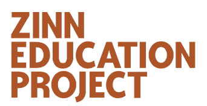

[The Execution of Lady Jane Grey](./english/paintings/the-execution-of-lady-jane-grey/README.md)
### Business
[Account Manager](./english/business/account-manager/README.md) from Mad Men [E-Mail](./english/business/email/README.md) [DOs](./english/DOs/README.md)
## Deutsch
### Gedanken
) taz
[Music Mind](https://music-mind.de) Subkultur und Sound
JACOBIN
taz
[Music Mind](https://music-mind.de) Subkultur und Sound
JACOBIN
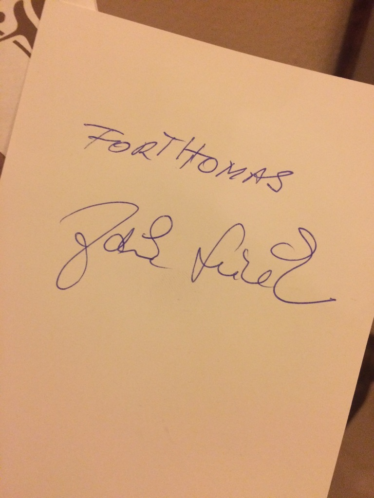
## Français ### Télé et Cinéma https://www.canalplus.com/cinema/ https://boutique.arte.tv #### x x x [La rebelle, les aventures de la jeune George Sand](./français/Cinéma/LaRebelle/README.md) [Les Femmes au Balcon](./français/Cinéma/les-femmes-au-balcon/README.md) [Le Testament d'Orphée](./français/Cinéma/le-testament-d'orphée/README.md) [Madame Bovary](./français/Cinéma/madame-bovary/README.md) en français [Le Blé en herbe] `27 April 2025` 🦋 [Becoming Karl Lagerfeld] private collection ### Livres For a fine vocabulary, read 137 books https://en.wikipedia.org/wiki/French_literature#French_Nobel_Prize_in_Literature_winners https://en.wikipedia.org/wiki/French_literature#French_literary_awards https://en.wikipedia.org/wiki/French_literature#Key_texts https://fr.wikipedia.org/wiki/Littérature_française 1 Les Trois Mousquetaires ... audio+epub 2 Le Comte de Monte-Cristo 28 July 2024-9 March 2025 audio only 3 La Comtesse d'Escarbagnas 17 February 2025 audio only 4 Laura. Voyages et Impressions (1865) 9 March 2025-... audio 5 [Le Blé en herbe](./français/livres/le-ble-en-herbe/README.md) `26 April 2025` [Surveiller et punir](./français/livres/surveiller-et-punir/README.md) de [Michel Foucault](./people/michel-foucault/README.md) [Madame Bovary](./français/livres/madame-bovary/README.md) ### Journaux et Magazines ### Revues [SIC](./français/revues/sic/README.md) ### Les gens [Marcel Duchamp](./people/marcel-duchamp/README.md) [Raymond Radiguet](./people/raymond-radiguet/README.md) [Jean Cocteau](./français/les-gens/jean-cocteau/README.md) [Colette](./français/les-gens/colette/README.md) [Gustave Flaubert] [Madame Bovary](./français/livres/madame-bovary/README.md) [Simone Weil]simone-weil/README.md) (sorry, Belgium) [René Magritte](./français/les-gens/rené-magritte/README.md) ### Maisons d'édition J'ai lu [https://fr.wikipedia.org/wiki/J'ai_lu](https://fr.wikipedia.org/wiki/J'ai_lu) [Le Blé en herbe](./français/livres/le-ble-en-herbe/README.md) ### Arts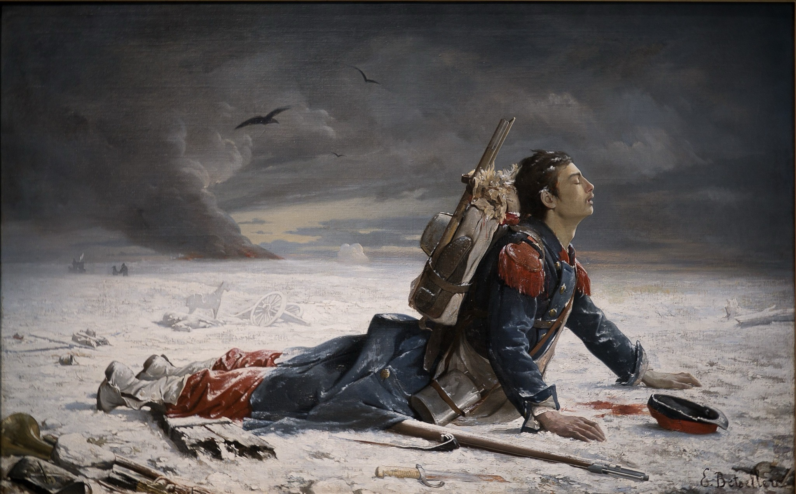
[L'Oublié !](./français/art/l-oublié/README.md)Claude Debussy 2 Arabesques, CD 74: No. 1 in E Major. Andantino con moto -- [https://youtu.be/nId-f-_pKbQ](https://youtu.be/nId-f-_pKbQ)
[Mr. Blue Sky](./music/mr-blue-sky/README.md)
[Them Bones](./music/them-bones/README.md) by Alice in Chains
[White Rabbit](./music/white-rabbit/README.md) by Jefferson Airplane
Señorita [https://youtu.be/Pkh8UtuejGw](https://youtu.be/Pkh8UtuejGw)
[The Cold Song](./music/the-cold-song/README.md) Best performances and Special Mentions.
[Lithium](music/lithium/README.md)
Frankie Goes to Holywood [https://www.facebook.com/reel/504841162596866?fs=e&fs=e](https://www.facebook.com/reel/504841162596866?fs=e&fs=e) [https://youtu.be/Yem_iEHiyJ0](https://youtu.be/Yem_iEHiyJ0) the story of https://youtu.be/LgksUyHeqlU
https://youtube.com/shorts/9NXq2tpvAcE?si=Qn6rgRBgSb3XQOTt
https://youtube.com/shorts/luQxPMOaRu4?si=c7j8h5SWbpVQTX1W
https://youtube.com/shorts/spzJXy69LCI?si=l15RhGerRRq5JjoK
https://youtube.com/shorts/x2ryfMgQmOE?si=Kxv-S5jMs95jKEd_
https://youtube.com/shorts/OBgMCC-DkpU?si=prrKt0O9zZ42v-YV
Tattoo Loreen https://youtube.com/shorts/fTJ0qt80LiQ?si=7J9XOU518dUxJWKm
Adele Rolling in the Deep [https://youtu.be/rYEDA3JcQqw](https://youtu.be/rYEDA3JcQqw)
Dreamer Ozzy Osbourne [https://youtu.be/LCCiwPEdEpg](https://youtu.be/LCCiwPEdEpg)
Friday I'm In Love (Accoustic) The Cure [https://youtu.be/qdYwrFRxKH0?si=YFqzsenAEtqs7m87](https://youtu.be/qdYwrFRxKH0?si=YFqzsenAEtqs7m87)
In This Shirt The Irrepressibles (live at Haldern Pop Festival 2009) [https://youtu.be/z6tDHN20h7s?si=F1kC09d4lkLEknJf](https://youtu.be/z6tDHN20h7s?si=F1kC09d4lkLEknJf)
Equinoxe, Pt. 4 Jean-Michel Jarre [https://youtu.be/iyX_qouAmfE?si=P5-8iUK7wwJmkp5X](https://youtu.be/iyX_qouAmfE?si=P5-8iUK7wwJmkp5X)
🦋 Here Comes The Rain Again (live 1987) [https://youtu.be/jWT2_b71K1k?si=U9sQcWLIAqscmV7u](https://youtu.be/jWT2_b71K1k?si=U9sQcWLIAqscmV7u)
All The Things She Said t.A.T.u. [https://youtu.be/8mGBaXPlri8?si=v11LPa22wbe-fkLx](https://youtu.be/8mGBaXPlri8?si=v11LPa22wbe-fkLx)
Christophe by Rock Monsieur 45 (France, 1973) [https://youtu.be/eWKWWTwkZaE?si=BseCtSWnu5kjXcwP](https://youtu.be/eWKWWTwkZaE?si=BseCtSWnu5kjXcwP)
🦋 Rapture by Laura Veirs [https://youtu.be/cwSKVB6Z-cs?si=D30lAnb-vn0pLIKd](https://youtu.be/cwSKVB6Z-cs?si=D30lAnb-vn0pLIKd)
[Einstürzende Neubauten](./music/einstuerzende-neubauten/README.md)
🦋 [https://www.mixcloud.com/ForgottenTapes/dj-dag-dorian-gray-frankfurt-juli-1989-side-a/](https://www.mixcloud.com/ForgottenTapes/dj-dag-dorian-gray-frankfurt-juli-1989-side-a/)
(Welsh) Calon Lan (Live) [https://youtu.be/9YFGM8LXRPM?si=cTn_UC0nVCVvipoy](https://youtu.be/9YFGM8LXRPM?si=cTn_UC0nVCVvipoy) via my fb friend RA McCafferty
I'am Not In Love 10cc [https://youtu.be/STugQ0X1NoI](https://youtu.be/STugQ0X1NoI)
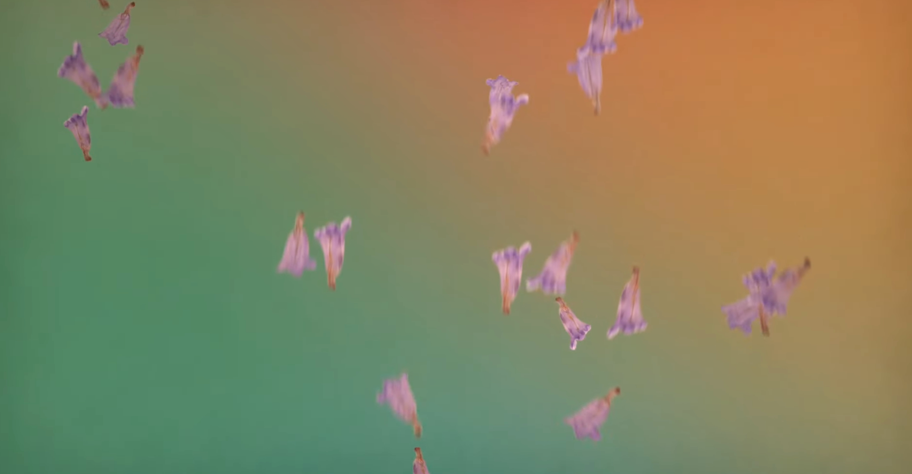
Never Gonna Change [https://youtu.be/V2Af30WFYQM](https://youtu.be/V2Af30WFYQM)
Be Alive, Beyoncé [https://youtu.be/4aeDlZOD-B0?si=5U40YpB6Q-SA7juF](https://youtu.be/4aeDlZOD-B0?si=5U40YpB6Q-SA7juF)
Angel, Massive Attack [https://youtu.be/hbe3CQamF8k](https://youtu.be/hbe3CQamF8k)
👻 Get Lucky cover by George Barnett [https://youtu.be/xY0-4ymWtbo](https://youtu.be/xY0-4ymWtbo) by Dua Lipa [https://youtu.be/wtZcG1jfyBE?feature=shared](https://youtu.be/wtZcG1jfyBE?feature=shared)
🦋 Why does my heart fee so bad? Mobi & Elton John (2000) [https://youtu.be/eg5B-oVXBj8?si=Oi8mTPV17h3dJ30h](https://youtu.be/eg5B-oVXBj8?si=Oi8mTPV17h3dJ30h)
by Frank Zappa [https://youtube.com/shorts/vip4VfvbgMw?si=zgeFdTwAE5p6bst1](https://youtube.com/shorts/vip4VfvbgMw?si=zgeFdTwAE5p6bst1)
Nights in White Satin The Moody Blues YouTube